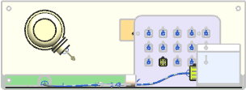
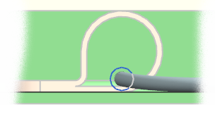

Right-click the background of the graphics window and choose Orient View→Back.

Zoom in on the portion of the segment that passes through the clamps.

Notice how the stock lies on the clamps and on the base of the drawer. This is the result of the default Stock Offset Expression:
MAX_PATH_STOCK_DIA/2.0